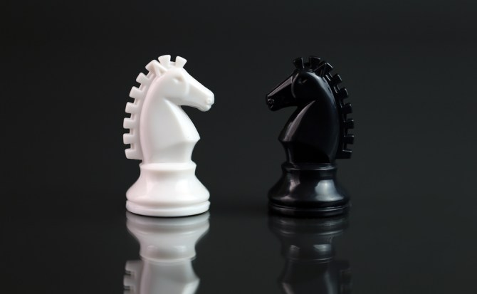
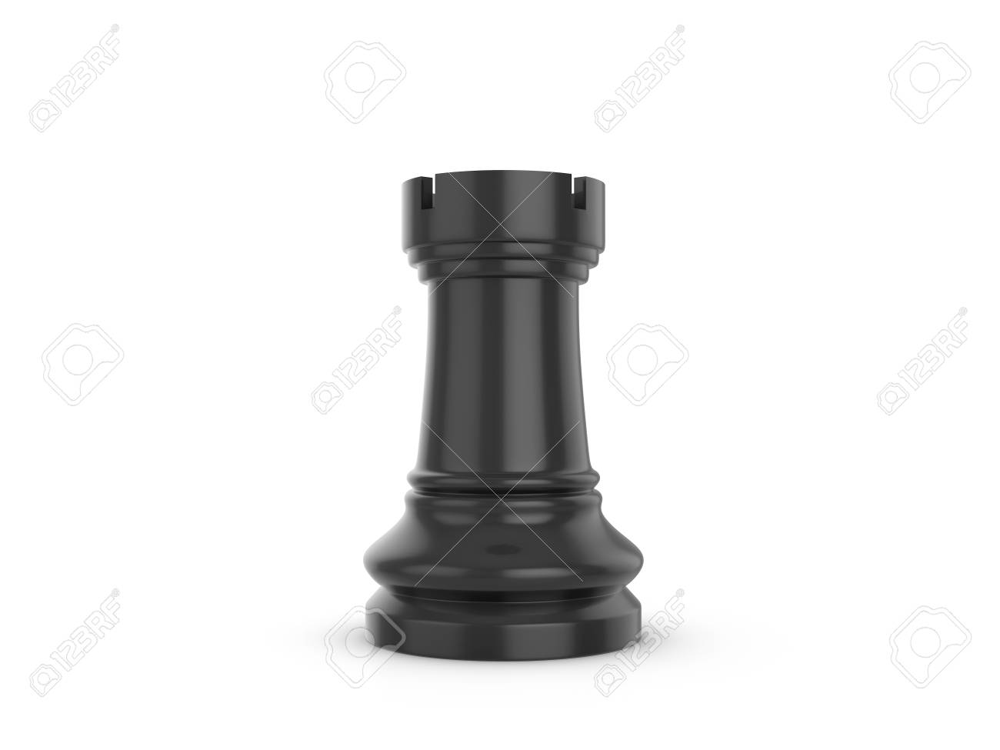

El peon es una de las piezas que aunque su potencial se mire pequeño puede ser gran ayuda. El peon se coloco Colocación inicial de los peones, que ocupan toda la segunda fila y la séptima.A diferencia de todas las otras piezas, los peones no pueden moverse hacia atrás.
Normalmente, un peón se mueve avanzando una sola casilla. Sin embargo, la primera vez que se mueve cada peón de su posición inicial, tiene la opción de avanzar dos casillas, pero sin saltar por encima de una casilla ocupada. Cualquier pieza directamente en frente de un peón, amiga o enemiga, bloquea su avance.
El caballo

El caballo es una pieza bastante importante en la que brilla en espacio cerrados.El movimiento del caballo es inusual entre las piezas de ajedrez. Al mover se desplaza dos casillas horizontalmente y una casilla verticalmente o dos casillas en posición vertical y una horizontal.
El movimiento completo por lo tanto, se parece a letra "L".A diferencia del resto de las piezas de ajedrez, el caballo puede "saltar" sobre cualquier pieza hasta su casilla de destino, y por eso es la única pieza que puede moverse al principio de la partida antes hacer cualquier movimiento peón.
Puede capturar una pieza enemiga moviendo sobre su casilla.Los caballos se suelen poner en juego un poco antes de lo que los alfiles y mucho antes que las torres y la dama.
El Alfil
El alfil es una pieza que brilla en lugares abiertos estas piezas son muy esencial cuando casi no hay peones en el tablero.se mueven diagonalmenteLos alfiles no pueden saltar sobre otras piezas. Un alfil captura mediante la ocupación de la casilla en la que se encuentra una pieza enemiga.
Los alfiles se pueden diferenciar según la cual el flanco de su posición inicial, es decir, el Alfil de Rey y Alfil de Dama.
Como consecuencia de su movimiento en diagonal, nunca cambian de color, ya sea en las casillas de color blanco o negro, y por lo que también es común referirse a ellos como alfiles de casillas blancas o negras.
La torre

La torre es una de las ultimas defensas del rey con ellas tambien se puede hacer el enroque.su movimiento es por filas y columnas (adelante, atrás, izquierda o derecha) cualquier número de casillas.
Una torre no puede pasar a través de otra pieza en el tablero.
La Reina
La reina es la segunda pieza mas importante en todo el tablero ajedrez esta pieza tienee mucha fuerza es la mas poderosa de todas las piezas.La Dama se puede mover en línea recta vertical, horizontal o diagonalmente, cualquier número de casillas no ocupadas, como se muestra en el diagrama. Su movimiento, por lo tanto, es la combinación de los movimientos de la torre y el alfil.
El rey
El rey es la pieza mas importante en todo el tablero si esta pieza queda en jaque mate se acabo toda la partida aunque su ofensiva no se ha muy poderosa como la dama es una pieza muy importanteSi el rey se ve amenazado y no puede escapar de la captura, se dice que está en 'jaque mate', y pierde la partida. Así pues, el objetivo y final de cada partida es dar mate al rey contrario.
Una condición similar, "jaque", es cuando el rey está amenazado, pero puede escapar de la captura, entonces un simple jaque no termina la partida. Cuando una pieza enemiga le apunta, de manera que en la jugada siguiente podría comérselo, se dice que le da jaque, y entonces es obligado que el rey huya a otra casilla, se elimine la pieza que lo amenaza o se escude «cubriendo» el jaque con una de sus propias piezas.Un rey puede mover una casilla en cualquier dirección (horizontal, vertical o diagonalmente).El rey, naturalmente, puede trasladarse a la que guste de esas ocho casillas. Si no, no sería rey. Puede moverse al cuadro que quiera pero siempre de uno en uno, paso a paso, con la debida majestad solemne. Las excepciones a esta regla son, que no se puede mover a una casilla amenazada por una pieza enemiga, o a una casilla que ya está ocupado por otra pieza de su propio bando. No está permitido al rey exponerse voluntariamente a un jaque, ponerse bajo la acción de una pieza enemiga ni por tanto comerse una pieza que esté defendida por otra. Es la única pieza que no puede «suicidarse», es decir «sacrificarse», según el lenguaje ajedrecístico.